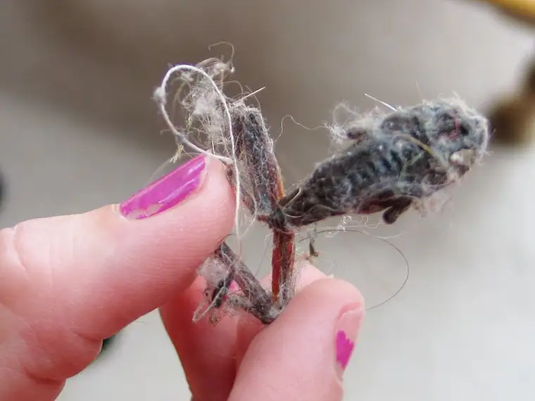

{kind=link}
I spent this past weekend with a group of soul sisters, most of whom I’ve known since my college days. We gathered at a cabin near a Minnesota lake called Green Lake and kept the theme of “happiness” in our sights. That doesn’t mean there wasn’t a good deal of sharing some of the deeper, heavier things in life, but it always followed with zeroing in on happiness as the end goal.
 |
| Shriveled up frog, one of few unhappy things at Green Lake |
{kind=link}
One of the gals read a list she’d found online of the top ten things that make us happiest in life. At the front end was family and relationships. The last entry was a surprise: watching television. Some of us conceded that “reading a good book” would make us every bit as happy (if not more so) as relaxing in front of the tube.
Just a few days before our mini retreat, my spiritual director shared an article from Forbes magazine referring to a study that listed “The Ten Happiest Jobs.” At the top? Clergy. “The least worldly are reported to be the happiest of all,” a short summary reads. But not much further down on the list was author. The reason given: “For most authors, the pay is ridiculously low or non-existent, but the autonomy of writing down the contents of your own mind apparently leads to happiness.”
Interestingly put, wouldn’t you say? The autonomy of writing down the contents of your own mind… I’ve never heard it put that way before, but it certainly affirms how I’ve felt in my life as a writer.
There’s something particularly exhilarating about the writing process. “Writing down the contents of your own mind.” (Can you tell I’m rather enamored with that description?) The article also lists the ten most hated jobs, which were generally better-paying positions that lead to higher social status.
According to the findings, in order for a life to be meaningful it must also be worthwhile. “Engagement in a life of tiddlywinks does not rise to the level of a meaningful life, no matter how gripped one might be by the game.”
I didn’t need much convincing. I’ve lived the reality of this, both in my life as a writer and as a mother. Both are very creative processes that require the person engaged in the vocation to give everything, but with an end result that is somehow worth all the sweat and tears oftentimes required.
So, there it is in black and white: being an author/writer can lead to great happiness. The same is true of having a life rich in friendships and other meaningful relationships. I guess that would make me doubly happy on the best days, and doubly blessed even on the worst of them.
Here are some other things that make me happy — all of which I experienced in some form during my weekend at Green Lake:
{kind=link}
{kind=link}
{kind=link}
{kind=link}
Slipping out of shoes post-walk and relaxing on the sofa, socked feet curled up and under…
{kind=link}
{kind=link}
{kind=link}
{kind=link}
{kind=link}
Q4U: What makes you happy?